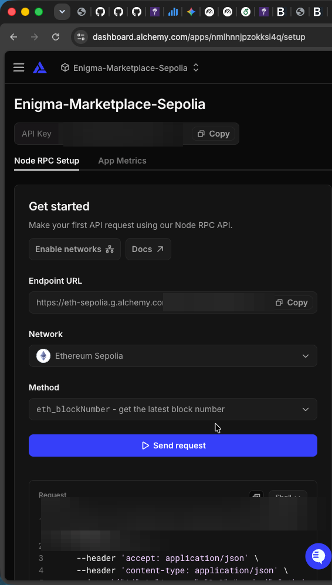

🧪 Build · Validate · Troubleshoot · Test — Enigma-Decentralized-Student-Marketplace
enigma-group-project · student template (implement the TODOs) Repo: https://github.com/enigma-group-project/Enigma-Decentralized-Student-Marketplace · GUI: https://enigma-group-project.github.io/Enigma-Decentralized-Student-Marketplace/
This repo has three vertical slices (one per member). Two contracts (EnigCredit + Marketplace) power an on-chain token economy with escrow:
| # | Slice | Contract | Test this slice | Frontend page | Key functions |
|---|---|---|---|---|---|
| 1 | Token + Wallet | contracts/EnigCredit.sol |
forge test --match-contract EnigCreditTest |
frontend/src/modules/token/ |
mint / transfer / approve |
| 2 | Listings | contracts/Marketplace.sol |
forge test --match-contract ListingsTest |
frontend/src/modules/listings/ |
createListing / getListing / totalListings |
| 3 | Escrow + Ratings | contracts/Marketplace.sol |
forge test --match-contract EscrowTest |
frontend/src/modules/market/ |
purchaseItem / confirmDelivery / cancelPurchase / rateUser |
Marketplace.solis co-owned by member2 (listings) + member3 (escrow/ratings).
A. Local — compile, validate, troubleshoot, test the GUI
A0. One-time toolchain (macOS)
/bin/bash -c "$(curl -fsSL https://raw.githubusercontent.com/Homebrew/install/HEAD/install.sh)" # if no brew
brew install git gh jq node
curl -L https://foundry.paradigm.xyz | bash && source ~/.zshenv 2>/dev/null; foundryup
forge --version # ✅ prints a forge versionA1. Get the code
git clone --recursive https://github.com/enigma-group-project/Enigma-Decentralized-Student-Marketplace.git
cd Enigma-Decentralized-Student-Marketplace
git submodule update --init --recursive # restores pinned deps (OZ v5.1.0, forge-std) per foundry.lock
# Fallback if you cloned without --recursive:
forge install # no args — syncs to foundry.lockA2. Compile
forge build # ✅ "Compiler run successful!"
forge build --sizes # per-contract bytecode sizesA3. Validate (tests)
forge test -vvv → tests fail by design until you implement the TODO(memberN) markers. Implement a slice, then forge test --match-contract <Slice>Test until green.
forge test -vvv # all slices
forge test --match-contract EnigCreditTest # slice 1
forge test --match-contract ListingsTest # slice 2
forge test --match-contract EscrowTest # slice 3
forge test --gas-report # gas numbers for the evaluation tableA4. Troubleshoot
| Symptom | Cause | Fix |
|---|---|---|
forge: command not found |
Foundry not installed/loaded | curl -L https://foundry.paradigm.xyz | bash then foundryup; reopen shell |
Source "forge-std/Test.sol" not found |
dep missing on fresh clone | forge install foundry-rs/forge-std OpenZeppelin/openzeppelin-contracts@v5.1.0 |
Source "@openzeppelin/contracts/…" not found |
OZ not installed | forge install OpenZeppelin/openzeppelin-contracts@v5.1.0 |
unexpected argument '--no-commit' |
old flag, removed in forge 1.7+ | run forge install foundry-rs/forge-std OpenZeppelin/openzeppelin-contracts@v5.1.0 (no --no-commit) |
Source file requires different compiler version |
wrong solc | foundry.toml pins 0.8.20; run foundryup (the IDE Solidity plugin may warn — Foundry is authoritative) |
test reverts TODO(memberN): implement … |
slice not implemented yet | implement that function in contracts/EnigCredit.sol or contracts/Marketplace.sol |
Connection refused on deploy |
Anvil not running | start anvil in a second terminal |
No such file or directory (os error 2) running forge script |
command run outside repo root | cd to repo root (the folder containing script/Deploy.s.sol) and rerun |
You seem to be using Foundry's default sender |
broadcast without explicit sender | use --sender <anvil-account0-address> --unlocked |
| MetaMask "wrong network" | chain mismatch | Anvil = chainId 31337 (http://127.0.0.1:8545); Sepolia = 11155111 |
| MetaMask labels the local net "GoChain Testnet" / symbol "GO" | GoChain testnet also uses chainId 31337 | cosmetic only — it's still your local Anvil chain; gas/fees shown in "GO" are fake. Proceed normally |
Mint reverts execution reverted (unknown custom error) … CALL_EXCEPTION |
minting from a non-owner account (e.g. MetaMask "Account 1") | only the deployer/owner can mint. Import Anvil account[0] as the owner — see A5b |
transferFrom reverts on purchaseItem |
buyer didn't approve first |
call EnigCredit.approve(marketplaceAddress, amount) before purchaseItem |
GUI connect fails / formatJson error |
ABI bundle missing one contract (often Reputation) |
regenerate frontend/src/shared/abi.js with all 3 contracts: EnigCredit, Marketplace, Reputation |
| GUI buttons do nothing / reads empty | ABI/addresses not wired | regenerate frontend/src/shared/abi.js and update deployed addresses in frontend/src/shared/config.js |
| Pages 404 | Pages source not set | repo must be public; Settings ▸ Pages ▸ Source = GitHub Actions; wait for the Deploy Pages run |
| CI: "workflow not allowed" | cross-org reusable workflow blocked | org Settings ▸ Actions ▸ General → allow all actions / cyber-enigma/* |
A5. Test the GUI locally (Anvil)
# 1) terminal A — from repo root, start local chain
anvil
# 2) terminal B — from repo root, deploy with explicit sender
forge script script/Deploy.s.sol:Deploy \
--rpc-url http://127.0.0.1:8545 \
--broadcast \
--sender 0xf39fd6e51aad88f6f4ce6ab8827279cfffb92266 \
--unlocked
# 3) regenerate ABI bundle from build output (include ALL 3 contracts)
cat > frontend/src/shared/abi.js <<EOF
export const ABIS = {
EnigCredit: $(jq -c .abi out/EnigCredit.sol/EnigCredit.json),
Marketplace: $(jq -c .abi out/Marketplace.sol/Marketplace.json),
Reputation: $(jq -c .abi out/Reputation.sol/Reputation.json),
};
EOF
# 4) auto-update anvil addresses in config.js from latest deploy artifact
RUN='broadcast/Deploy.s.sol/31337/run-latest.json'
CFG='frontend/src/shared/config.js'
ENIG=$(jq -r '.transactions[] | select(.transactionType=="CREATE" and .contractName=="EnigCredit") | .contractAddress' "$RUN" | tail -n1)
MARK=$(jq -r '.transactions[] | select(.transactionType=="CREATE" and .contractName=="Marketplace") | .contractAddress' "$RUN" | tail -n1)
REP=$(jq -r '.transactions[] | select(.transactionType=="CREATE" and .contractName=="Reputation") | .contractAddress' "$RUN" | tail -n1)
perl -0777 -i -pe 's#addresses:\s*\{[^}]*\},#addresses: { EnigCredit: "'$ENIG'", Marketplace: "'$MARK'", Reputation: "'$REP'" },#s' "$CFG"
# 5) terminal C — serve frontend
cd frontend/src
python3 -m http.server 8080In MetaMask:
- add network RPC
http://127.0.0.1:8545, Chain ID31337, symbolETH - import Anvil account[0] private key as Owner (can mint ENGC)
- connect site and switch to the local Anvil network before pressing UI buttons
Local GUI URLs:
- Root:
http://localhost:8080/ - Token:
http://localhost:8080/modules/token/index.html - Listings:
http://localhost:8080/modules/listings/index.html - Market:
http://localhost:8080/modules/market/index.html
Walk the three module pages in order:
- Token — mint ENGC to buyer and seller wallets
- Listings — seller creates a listing; copy the listing ID
- Market — buyer approves ENGC spend →
purchaseItem→ seller confirms delivery → optionallyrateUser
A5b. Token module — connect MetaMask & mint ENGC (screenshot walkthrough)
Page:
http://localhost:8080/modules/token/index.html· contract:EnigCredit· screenshots live inresources/token-wallet/(see that folder's README for the filename → step map). 🖼️ Illustrated walkthrough (both networks): seenetwork-tests.md. Only the contract owner can mint. The owner is whoever deployed — when you deploy with Anvilaccount[0](--sender 0xf39fd6…92266in A5), that account is the owner.
1 — Connect the site to MetaMask Click Connect wallet. In the MetaMask dialog, on the Permissions tab confirm both: See your accounts and Use your enabled networks. If the local chain isn't listed, hit Edit beside Use your enabled networks → tick GoChain Testnet (this is your local Anvil chain — see note below) → Update, then Connect.
🛈 Why "GoChain Testnet"? MetaMask labels chainId 31337 as GoChain Testnet with a GO currency symbol because GoChain's public testnet shares that chainId with Anvil. It's purely cosmetic — you are on your local Anvil chain, and the "GO" gas amounts are fake dev ETH.
2 — A non-owner mint fails (expected) With a regular MetaMask account (e.g. Account 1 0x58ee…6202b) connected, filling the form and pressing Mint ENGC reverts. The page prints a long red error ending in code=CALL_EXCEPTION. This is the onlyOwner guard doing its job — that account isn't the token owner.
3 — Import the Anvil owner account into MetaMask Open the account menu → Add wallet → Import an account (Via a private key). Paste account[0]'s private key — Anvil prints it in the terminal where you ran anvil (it's the account whose address is 0xf39Fd6e51aad88F6F4ce6aB8827279cffFb92266, the --sender you deployed with). Press Import.
The imported account shows the full initial supply, 1,000,000 ENGC (it received the deployer mint).
4 — Mint as the owner Reconnect / select the imported owner account. In Mint EnigCredit (owner only) enter a recipient (0x…) and an amount (e.g. 100) → Mint ENGC. MetaMask raises a Transaction request Interacting with 0x5FbD…80aa3 (the EnigCredit address from config.js) → Confirm.
On success the page shows ✅ Minted 100 ENGC to 0x… · New balance: 1000100.0 ENGC and MetaMask's Activity lists Mint · Confirmed.
Mint ENGC to your buyer and seller wallets here, then continue to Listings and Market.
B. Remote — compile, validate, troubleshoot, test the GUI (on GitHub)
B1. Compile & validate via CI
Every push / PR triggers .github/workflows/ci.yml. Open the repo's Actions tab → latest CI run → the build-test job runs forge build + forge test. A green ✔ = compiles and tests ran (see Auto-Grade for the score).
gh run list -R enigma-group-project/Enigma-Decentralized-Student-Marketplace --workflow ci.yml --limit 1
gh run watch -R enigma-group-project/Enigma-Decentralized-Student-MarketplaceB2. Troubleshoot remotely
Open the failed run → build-test → expand the red step to read the log, or:
gh run view -R enigma-group-project/Enigma-Decentralized-Student-Marketplace --log-failedSame root causes as the table in A4 (most often: OZ install missing or a Solidity error).
B3. Test the GUI on GitHub Pages
- 🌐 https://enigma-group-project.github.io/Enigma-Decentralized-Student-Marketplace/ — the live three-module web app (published by
.github/workflows/pages.ymlfromfrontend/src). Reads work with no wallet on the configured network; writes use the visitor's MetaMask. For a hosted on-chain demo, deploy to Sepolia (README §Hosted demo), paste the addresses intoconfig.js, setDEFAULT_NETWORK="sepolia", and push.
B3a. Get a Sepolia RPC URL (Alchemy)
The hosted demo deploys against a Sepolia RPC endpoint. The free tier from Alchemy works well:
- Create new app — name it e.g.
Enigma-Marketplace-Sepolia, use case Infra & Tooling. - Choose chains — select Ethereum → Sepolia.
- On the app page, copy the HTTPS Endpoint URL (
https://eth-sepolia.g.alchemy.com/v2/<API-KEY>).

Then deploy with that URL (keep the key out of git — export it in your shell):
export SEPOLIA_RPC_URL="https://eth-sepolia.g.alchemy.com/v2/<API-KEY>"
export PRIVATE_KEY="0x<deployer-key-with-sepolia-ETH>"
forge script script/Deploy.s.sol:Deploy --rpc-url $SEPOLIA_RPC_URL --private-key $PRIVATE_KEY --broadcast --verifyPaste the printed Sepolia addresses into frontend/src/shared/config.js, set DEFAULT_NETWORK="sepolia", and push.
B4. Auto-Grade score (template only)
Every push runs Auto-Grade (.github/workflows/grade.yml, a reusable workflow from cyber-enigma/autograder). Open Actions ▸ Auto-Grade ▸ latest run ▸ Summary to see the score table (a fresh skeleton ≈ 57/100; it rises as tests pass and TODO(memberN) markers are cleared).
C. Self-evaluation with the auto-grader (students)
Same rubric the TA uses (defined in cyber-enigma/autograder/rubric.yml): compiles 15 · tests 35 · required files 15 · TODOs cleared 15 · docs 10 · hygiene 10.
Local (fastest, offline):
forge install foundry-rs/forge-std OpenZeppelin/openzeppelin-contracts@v5.1.0
python3 scripts/grade.py # prints the score table; writes grade.jsonscripts/grade.py is a bundled copy of the canonical grader for quick self-checks.
On GitHub (the official rubric, fetched at grade time):
- Every push/PR runs Auto-Grade → Actions ▸ Auto-Grade ▸ latest run ▸ Summary for the score table (+
grade-report.md/grade.jsonartifacts). - Run it on demand without a code change:
This calls
gh workflow run "Auto-Grade" -R enigma-group-project/Enigma-Decentralized-Student-Marketplace # or the Actions ▸ Auto-Grade ▸ "Run workflow" buttoncyber-enigma/autograder's reusable workflow, so you always score against the current rubric (you can't silently fork it).
Raise your score: clear every TODO(memberN) marker (impl 15), make forge test pass (tests 35), keep the 4 module docs + README evaluation table filled (docs 10 + hygiene 10).
Procedure doc generated for the Enigma framework. Compile = forge build · validate = forge test · GUI = the URL above.